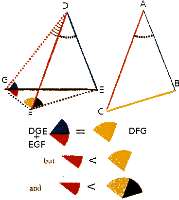

Proposizione I.24
Proposizione I.24 - If two triangles have two sides equal to two sides respectively, but have one of the angles contained by the equal straight lines greater than the other, then they also have the base greater than the base.
Proof - Let ABC and DEF be two triangles having the two sides AB and AC equal to the two sides DE and DF respectively, so that AB equals DE, and AC equals DF, and let the angle at A be greater than the angle at D. I say that the base BC is greater than the base EF. Since the angle BAC is greater than the angle EDF, construct the angle EDG equal to the angle BAC at the point D on the straight line DE. Make DG equal to either of the two straight lines AC or DF (Prop I.3). Join EG and FG. Since AB equals DE, and AC equals DG, the two sides BA and AC equal the two sides ED and DG, respectively, and the angle BAC equals the angle EDG, therefore by Prop I. 4 the base BC equals the base EG.
Again, since DF equals DG, therefore by Prop. I.5 the angle DGF equals the angle DFG. Therefore the angle DFG is greater than the angle EGF (CN5). Therefore the angle EFG is much greater than the angle EGF. Since EFG is a triangle having the angle EFG greater than the angle EGF, and side opposite the greater angle is greater, therefore the side EG is also greater than EF Prop I.19. But EG equals BC, therefore BC is also greater than EF.□ 